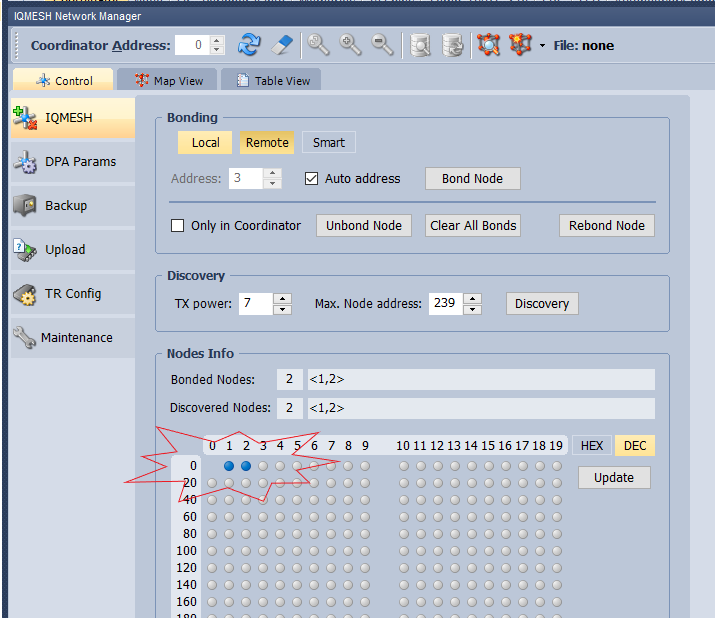

Setup IQRF Network

Start building your IQRF network with DS-START-04 development kit.
Links
- Order here
- The Content of the Starter Kit
- IQRF Quick Start Guide
- CK-USB-04A, online page...
- ...check for updates
- DPA Framework on-line
Install IDE

IDE is a basic programming tool for IQRF devices. Download and install https://www.iqrf.org/technology/iqrf-ide/iqrf-ide-gui
Install IQRF Startup Package
Download IQRF Startup package and unpack anywhere to your hard drive.
First Start
-
Start your IDE, navigate to your installed IQRF Startup package e.g. d:\IQRF_OS403_7xD\Examples\DPA\StartUp and open HWP-demo.iqrfprj
-
Insert any IQRF module to programmer CK-USB-04A and connect to PC via USB.

- In IDE you will probably see USB device not connected in bottom panel.

- Go to menu Tools/USB Classes/Swith to Custom Device mode and select listed COM (USB) port. If you do not see any port please follow troubleshooting on IQRF support. You need driver update. Successful selection will show dialogue like this.

- Click Switch and the bottom panel will show Module ready - communication mode

- It might show dialogue about firmware update, then click Yes.

- Click Upload button, wait for firmware update, then press Close.
Configure Coordinator
A Concentrator is the node connected with PC or Gateway gathering data from all nodes. ! When you insert or remove TR from holder, always press SW2 button (nearer to SIM slot). It breaks power.
- In left panel check HWP-Coordinator-...iqrf file

- Double click on DPA-config.xml in left panel. Set items in dialogue as picture shows and click Upload button.

- In menu select Programming/Upload/Upload Selected Items. If the system complains that uploading version is not for the connected TR module, please upgrade OS in module. See Upgrade OS in TR module section.
Configure Nodes
A Node is a module communication within mesh with Concentrator. ! When you insert or remove TR from holder, always press SW2 button (nearer to SIM slot). It breaks power.
-
Insert TR module to be node into programmer
-
In left panel of IDE check HWP-Node-STD-...

-
Keep the DPA-config.xml settings as previously at concentrator.
-
Upload all your nodes. If the system complains that uploading version is not for the connected TR module, please upgrade OS in module. See Upgrade OS in TR module section.
Upgrade OS in modules
-
In menu select Tools/Change IQRF OS Wizard and follow wizard.
-
Use SPI as upload method.

- Then select version to be uploaded
- !If your modules are older you might need to repeat the upgrade OS more times
Run Network
-
Insert coordinator configured TR module to programmer CK-USB-04A and nodes to other DK-EVAL-04A modules.
-
In IDE in menu start Tools/IQMESH Network Manager and fill out the dialogue as shown (TX power, Auto address, ...).

-
Then pres Clear All Bonds for remove any previous bonded modules. Red diods of modules are blinking.
-
Then pres Bond Node and during bonding period press and hold SW1 button at one node until green red turns on. Repeat for each node.

- Now you should see two spots indicating successful bonding. Now click Discovery and spots are in blue.

- Switch in IDE to Map View and you should see node structure

- Click right mouse button on node 1 and select LED Red On
- Now you can see that the RED LED of node 1 is on. In similar way you can turn-off or play with LEDs.
Send DPA messages
Direct Peripheral Access (DPA) protocol is a simple byte-oriented protocol used to control nodes and network. Detail description of DPA Framework
- DPA can be sent via IDE. Open Terminal and click Set LEDR on which prefills data into Data to send fields. Change only NADR=0001 which indicates node 1 and click Send.
- This DPA command turned on RED diod on node 1.
- You can define any other DPA messages.